В каком году Франкское государство стало империей?
Выберите один ответ:
Пройти тест · все вопросы на одной странице
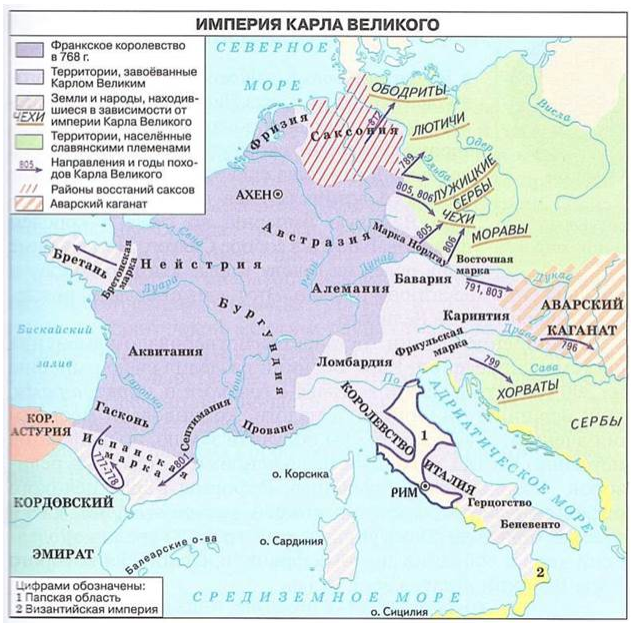 |
После 768 года Карл распространил власть на соседние земли Галлии, Испанскую марку, Италию и Бретань. Сардиния в эти завоевания не входила.
Монах, арианство и миссионер связаны с христианской церковью. Двуполье — способ делить поле под посев и пар.
Пять обязанностей мусульманина — признание Аллаха и Мухаммеда, ежедневная молитва, налог в пользу бедных, пост и хадж. Хиджаб, омовение и заучивание Корана в этот ряд не входят.
За военную службу сеньор давал вассалу землю на условии верности. Такое владение называлось феодом.
Королевство франков выросло из завоевания Галлии Хлодвигом. Первый крестовый поход был много позже, а падение Рима только открыло эти земли.
Норманнами называли северян из Скандинавии. Англия и Франция были землями, куда они приплывали.
При Хлодвиге появилась Салическая правда, и франки приняли христианство. Завоёванных жителей Галлии в рабов не обращали.
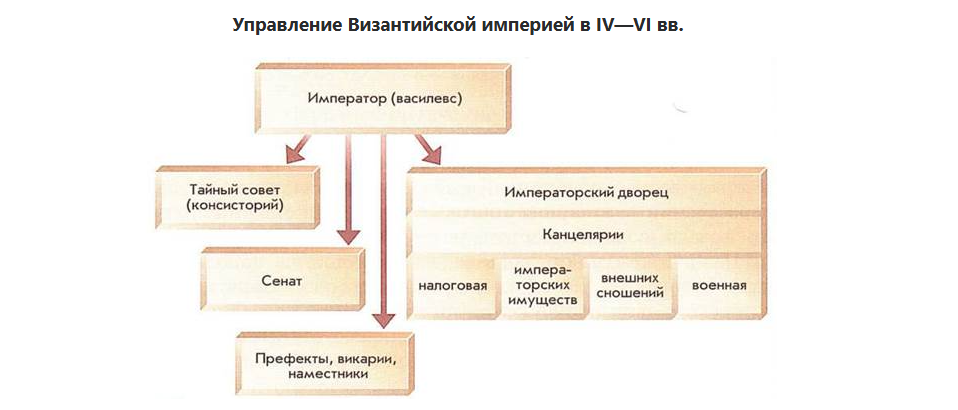 |
Сенат, тайный совет и власть префектов, викариев и наместников Византия сохранила от Рима. Остальные канцелярии сложились уже в её собственном управлении.
Срок империи считают от коронации 800 года до Верденского договора 843 года. Разница этих дат — 43 года.
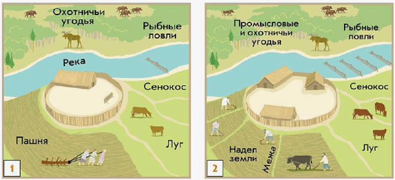 |
Соседская община — это отдельные дворы со своими наделами и общими угодьями. На иллюстрации такой уклад показан под цифрой 2.
Сначала пала Западная Римская империя, затем сложилось королевство Хлодвига. Победа при Пуатье раньше коронации Карла.
После раздела империи усилились набеги норманнов. Новая империя Оттона возникла раньше раскола церквей.
Хиджра и взятие Мекки относятся ко времени Мухаммеда. Омейяды пришли к власти в 661 году, Аббасиды сменили их в 750-м.
Константинополь основан в 330 году, а правление Юстиниана приходится на VI век. Раскол церквей был раньше захвата города крестоносцами.
Великое переселение сменилось варварскими королевствами. Из них выросла империя Карла, а после её распада наступила феодальная раздробленность.
Ступени идут от короля к герцогам и графам, затем к баронам и рыцарям. Каждый служил только своему сеньору.
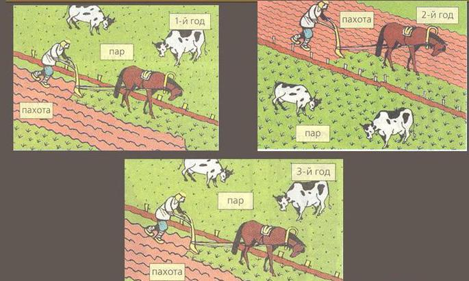 |
Поле делили пополам: одну часть засевали, другую держали под паром и каждый год меняли местами.
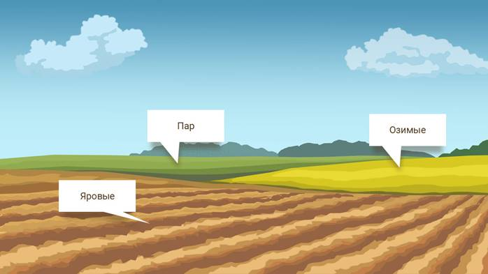 |
С XI века пашню делили на озимый, яровой и паровой участки. Чередование поднимало урожай.
Средние века отсчитывают от падения Западной Римской империи в V веке до падения Константинополя в XV веке. Этот промежуток длился примерно тысячу лет.
Римляне называли варварами чужие племена за границей империи. Германцы, кельты и славяне жили на землях будущей Европы.
| религиозные учения Индии | |
| религиозные учения Японии | |
| религиозные учения Китая |
Местные учения каждой страны жили рядом с буддизмом: индуизм и джайнизм в Индии, конфуцианство и даосизм в Китае, синтоизм в Японии.
(1)
(2)
(3)
(4)
(5)
(6)
(7)
(8)
(9)
(10)
(11)
(12)
(13)
(14)
(15)
Варна закрепляла занятие. Брахманы вели культ и учение, кшатрии — войну и власть, вайшьи — хозяйство, шудры и неприкасаемые — ремесло и чёрную работу.
| подписание английским королём Иоанном Безземельным Великой хартии вольностей | |
| созыв парламента в Англии | |
| созыв кортесов в королевстве Леон | |
| созыв Генеральных штатов во Франции |
Сословные собрания и уступки короля возникают в разное время: от кортесов Леона и хартии Иоанна к английскому парламенту и французским Генеральным штатам.
| Вормсский договор папы римского и императора | |
| «хождение в Каноссу» императора Генриха IV | |
| создание Священной Римской империи | |
| подписание императором Золотой буллы | |
| битва при Леньяно |
Даты идут за спором императоров, пап и городов: создание империи, унижение в Каноссе, Вормс, победа при Леньяно и порядок выборов в Золотой булле.
| Аварский каганат | |
| провозглашение Темуджина Чингисханом. Создание Монгольской империи | |
| смерть Тимура (Тамерлана). Завершение эпохи завоеваний | |
| Великий Тюркский каганат | |
| захват монголами Багдада — столицы Арабского халифата |
Тюркский и Аварский каганаты — ранние кочевые державы. Империя Чингисхана, взятие Багдада и смерть Тимура относятся к XIII–XV векам.
| начало походов в Индию Махмуда Газневи | |
| свержение власти монголов, начало правления династии Мин в Китае | |
| начало правления династии Тан в Китае | |
| вторжение в Индию Тимура | |
| начало правления династии Сун в Китае | |
| установление власти сёгунов в Японии | |
| завоевание Китая монголами | |
| образование Делийского султаната в Индии |
Китайские даты охватывают Тан, Сун, монгольское завоевание и Мин, индийские — походы Газневи, Делийский султанат и Тимура, японская — власть сёгунов.
| появление государства инков | |
| начало распространения христианства в Африке | |
| возведение Теночтитлана, появление государства ацтеков | |
| создание империи Мали |
Христианство раньше закрепилось в Аксуме, держава Мали сложилась в XIII веке. Теночтитлан основан в 1325 году, государство инков — в XV веке.
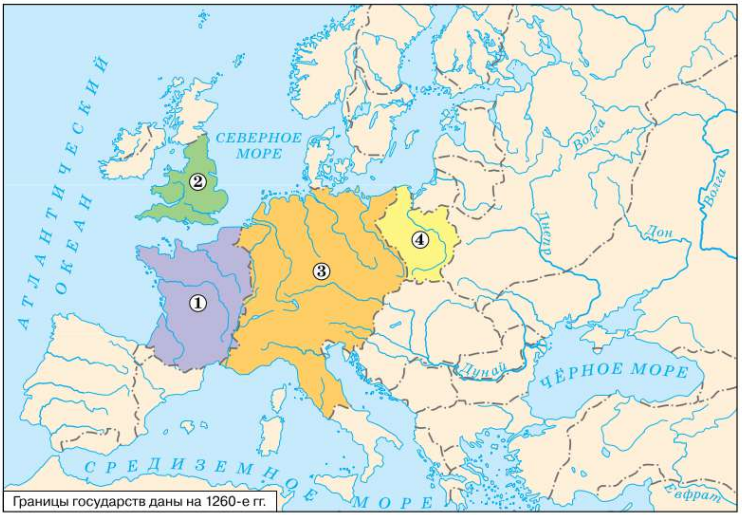 |
| 1 | |
| 4 | |
| 2 | |
| 3 |
Цифру читают по месту страны на карте Европы: остров, земли за проливом и обширная область в центре. Германию, Чехию и Польшу отличают по положению рядом с империей.
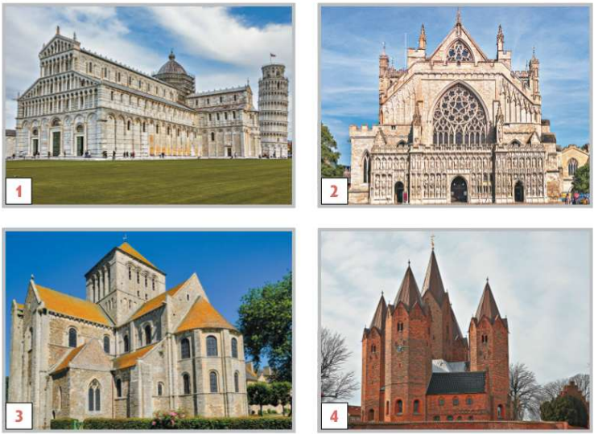 |
| 3 | |
| 2 | |
| 1 | |
| 4 |
Романский храм узнают по толстым стенам, полукруглым аркам и узким окнам. Готический — по стрельчатым окнам, витражам и аркбутанам, по этим чертам и ставят стиль у цифры.
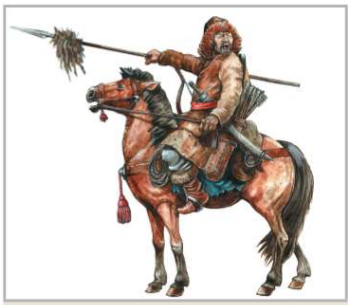 |
Монгольский всадник бился луком, саблей, длинным копьём и палицей. Арбалет в этот набор не входил.
Генрих II вводил королевский суд для свободных, «щитовые деньги» и наёмное войско. Хартия и парламент связаны уже с позднейшими королями.
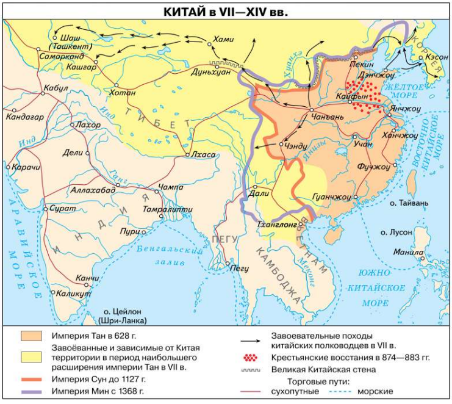 |
Китай вёл морскую и сухопутную торговлю с соседями в Азии и с Арабским халифатом. Англия и Франция на этих путях не стояли.
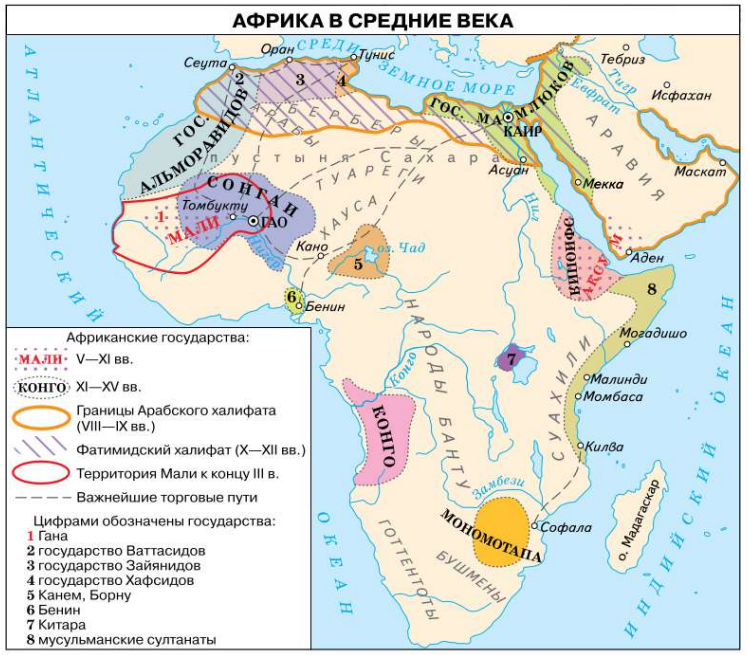 |
Арабы, берберы, туареги и суахили населяли север, Сахару и восточный берег Африки. Ацтеки и инки жили в Америке, готы — в Европе.
Три палаты собрали духовенство, светских феодалов и зажиточных горожан. Крестьян не звали, а рыцари входили в дворянскую палату.
Делийский султанат провозгласили в 1206 году, Тимур вторгся в Индию в 1398-м. Между этими датами 192 года.
Раньше всех возник Тюркский каганат, за ним державы аваров и хазар. Монгольская империя моложе их, а держава Тимура — последняя.
Английское графство возглавлял королевский чиновник, отвечавший за порядок и сбор налогов. Его называли шерифом.
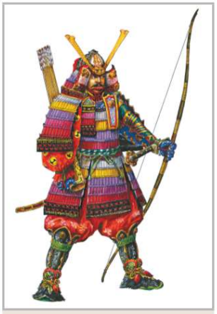 |
Профессионального конного воина на службе у японского господина называли самураем.
В 1265 году в Англии впервые собрали представителей сословий при короле. Это собрание и стало парламентом.
«Красные повязки» поднялись из-за власти монголов над Китаем. Восстание изгнало потомков Чингисхана и открыло правление династии Мин.
| Определите, сколько лет разделяют два события: битву при Анкаре и гибель Византийской империи. | |
| Сколько лет продолжалась Война Белой и Алой розы? | |
| Определите, сколько лет продолжалась Реконкиста? | |
| Определите, сколько лет продолжались Гуситские войны? |
Годы между событиями получают вычитанием крайних дат. Так считают промежуток от Анкары до гибели Византии и длительность войны Роз, Реконкисты и гуситских войн.
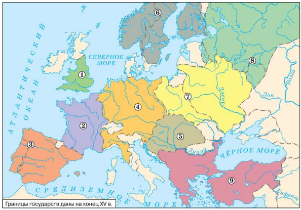 |
| Венгрия | |
| Великое княжество Литовское и Польша | |
| Османская империя | |
| Русское государство | |
| Англия | |
| Франция | |
| Испания и Португалия | |
| Священная Римская империя | |
| Швеция и Норвегия |
Страну на карте XV века узнают по месту: остров и запад Европы, Пиренеи, центр, Венгрия, Польша с Литвой, Балканы османов и Русь на востоке.
| Филиппо Брунеллески | |
| Данте Алигьери | |
| Джованни Боккаччо | |
| Донателло | |
| Франческо Петрарка | |
| Сандро Боттичелли | |
| Джотто |
Мастера узнают по роду искусства и главному творению: купол и статуя, роспись и картины, поэма, сонеты и сборник новелл.
Компас держал курс, астролябия показывала широту. Каравелла, судно португальцев и испанцев, выдерживала долгий путь при разном ветре.
| Жакерия | |
| битва при Креси | |
| битва при Пуатье | |
| восстание Уота Тайлера | |
| начало Столетней войны | |
| битва при Азенкуре | |
| окончание Столетней войны |
Война идёт от её начала к победам англичан при Креси и Пуатье и к народным восстаниям. Азенкур и окончание войны в 1453 году замыкают ряд.
| завершение Войны Алой и Белой розы | |
| падение Константинополя | |
| завоевание османами владений генуэзцев в Крыму | |
| битва на Косовом поле | |
| битва при Варне | |
| образование единого Испанского королевства | |
| начало Войны Алой и Белой розы |
Удар османов на Балканах и падение Константинополя стоят в одном ряду с войной Роз, потерей генуэзского Крыма и объединением Испании.
| подписание императором Священной Римской империи Золотой буллы | |
| сожжение Яна Гуса | |
| уния Великого княжества Литовского и Польши | |
| начало Гуситских войн | |
| окончание Гуситских войн | |
| восстание «чомпи» во Флоренции | |
| Грюнвальдская битва |
Сначала появляются Золотая булла и восстание чомпи, затем уния Польши с Литвой и Грюнвальд. Казнь Гуса открывает гуситские войны, они кончаются в 1434 году.
| договор Руси с Византией | |
| объединение Олегом северного и южного центров Руси | |
| поход Олега на Константинополь | |
| призвание Рюрика.Дата образования Руси |
Ряд открывает призвание Рюрика, затем Олег соединяет север и юг и ходит на Константинополь. Договор с Византией закрепляет итог похода.
| Западные славяне | |
| Восточные славяне | |
| Южные славяне |
Ветвь определяют по стороне расселения. Запад — поляки, чехи и словаки, восток — русские, украинцы и белорусы, юг — сербы, болгары и хорваты.
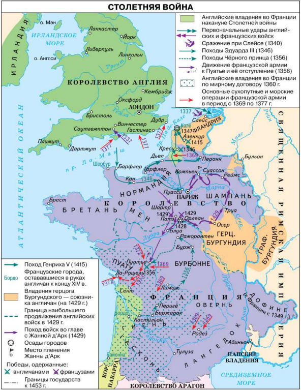 |
Мир 1360 года оставил английскому королю юго-запад Франции: Гиень, Гасконь и Пуату. Нормандия и Фландрия тогда ему не принадлежали.
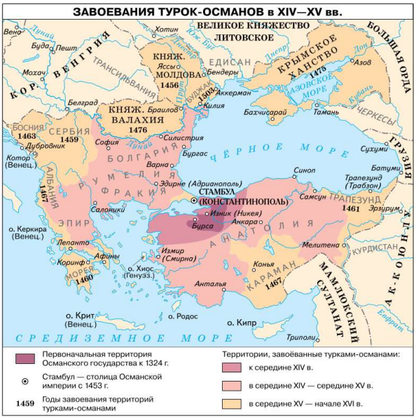 |
К середине XV века османы держали Анатолию, Фракию, Румелию, Болгарию, Сербию и Эпир. Молдова и Крымское ханство в этот состав ещё не вошли.
В записках с христианина требуют ежегодный золотой, вьючных животных и провиант для войска. Барщина хану и десятина мечети там не названы.
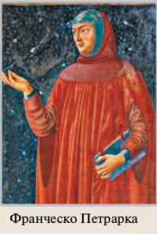 | 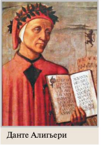 | 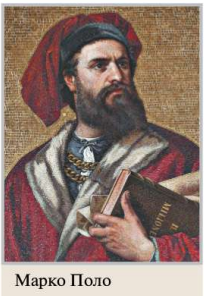 |
Отрывок говорит о славе поэмы «Божественная комедия». На иллюстрациях выбирают портрет Данте Алигьери и эту книгу.
Битва при Анкаре была в 1402 году, Константинополь пал в 1453-м. Между событиями 51 год.
Гуситские войны шли с 1419 по 1434 год. Это 15 лет.
Сначала англичане победили при Креси и Пуатье, затем при Азенкуре. Снятие осады Орлеана — самое позднее из этих сражений.
На костёр ведут чеха, обличавшего папу и духовенство. Так в Констанце казнили Яна Гуса.
Церковный суд над еретиками, где применяли тюрьму, пытки и сожжение, назывался инквизицией.
Крупные партии разных товаров из дальних земель съезжались продавать на ярмарку.
Название эпохи связано со стремлением гуманистов вернуть науку и искусство Древней Греции и Рима.
| лично свободный человек, но живший на чужой земле и обрабатывающий её. За это он платил оброк продуктами и выполнял барщину (работу). | |
| человек, который потерял свободу в результате того, что взял что-то в долг, но мог вернуть себе свободу, отработав сумму долга | |
| человек, который не имел свободы и был полной собственностью своего господина. |
Смерд в «Русской правде» ещё лично свободен, хотя живёт на чужой земле и несёт повинности. Закуп отрабатывает долг и может освободиться, холоп — собственность господина.
| Экономические | |
| Политические | |
| Социальные |
Натуральное хозяйство ослабляет связи земель, князья тянут власть от Киева, бояре крепнут на своих владениях. Единая вера распад Руси не объясняет.
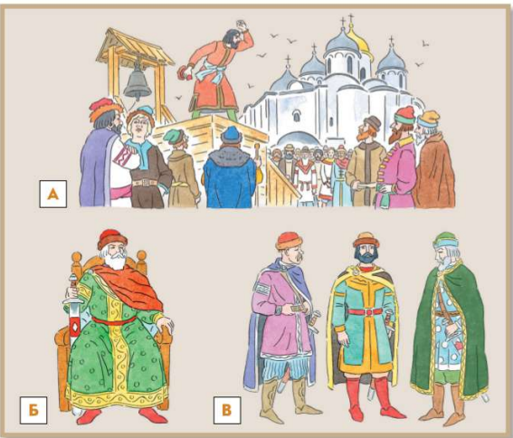 |
| В | |
| Б | |
| А |
Букву смотрят по символу на рисунке: вече означает Новгород, сильный князь — Владимиро-Суздальскую землю, власть бояр — Галицко-Волынскую.
Серебряные слитки назывались гривнами, меховые деньги — кунами, арабские монеты — дирхемами. Вместе с ними по Руси ходили византийские монеты.
| походы Святослава | |
| походы Игоря на Константинополь | |
| новый торговый договор Руси с Византией |
Походы Игоря на Константинополь и новый договор относятся к 941 и 944 годам. Войны Святослава идут в 964–972 годах.
| княжение Владимира Святославича в Киеве | |
| княжение Ярослава Мудрого | |
| Крещение Руси | |
| разгром Ярославом Мудрым печенегов | |
| создание Правды Ярослава |
Княжение Владимира включает Крещение Руси. При Ярославе появляются его Правда, разгром печенегов и долгое правление до середины XI века.
| княжение в Киеве Мстислава Великого | |
| общерусский поход против половцев | |
| Устав о резах и закупах | |
| княжение в Киеве Владимира Мономаха | |
| поражение русских войск от половцев на реке Альте |
Поражение на Альте раньше похода на половцев, Устава и киевского княжения Мономаха. Мстислав правит в Киеве уже после отца.
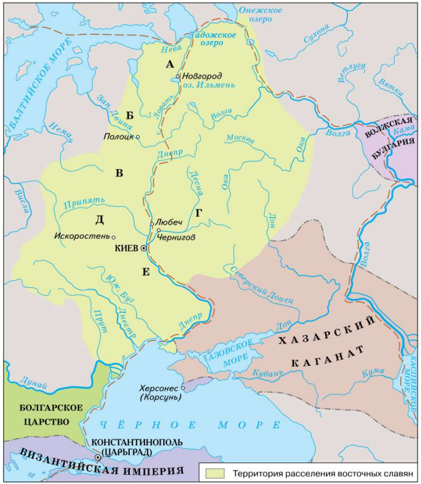 |
| Е | |
| Б | |
| Г | |
| А | |
| В | |
| Д |
Букву ставят по месту союза: поляне у Киева, древляне западнее, словене у Ильменя, вятичи на Оке, дреговичи между Припятью и Двиной. Половцы к этим союзам не относятся.
От смерти Мстислава в 1132 году до конца XV века проходит около 350 лет.
В «Повести временных лет» с 1068 года насчитывают пятьдесят половецких набегов.
Олег утверждается в Киеве и заключает договоры с Византией раньше гибели Игоря. Поездка Ольги в Царьград замыкает ряд.
Владимир приходит к власти, крестит Русь и умирает в 1015 году. Разгром печенегов и смерть Ярослава стоят позже.
После поражения на Альте князья съезжаются в Любече и бьют половцев. Киевское княжение Мономаха раньше смерти Мстислава.
Землю, которой владели без условия службы и передавали по наследству, называли вотчиной.
Жреца языческих богов, который служил им и предсказывал, у славян называли волхвом.
Хозяйство, где производят только нужное для собственной жизни, называют натуральным.
В Новгороде главные решения принимало народное собрание, а власть князя была узкой. Это собрание называлось вече.
Правда Ярослава вводила писаный закон, ограничивала кровную месть и назначала денежные штрафы. В высказывании сказано обратное.
Путь с Балтики через русские реки выводил в Константинополь. По нему европейская торговля связывалась с Византией и Востоком.
Реформа Владимира заменила языческое многобожие одной верой для всей Руси — христианством.
В 800 году папа в Риме возложил на Карла Великого императорскую корону. Битва при Пуатье была в 732 году, а раздел империи — в 843-м.